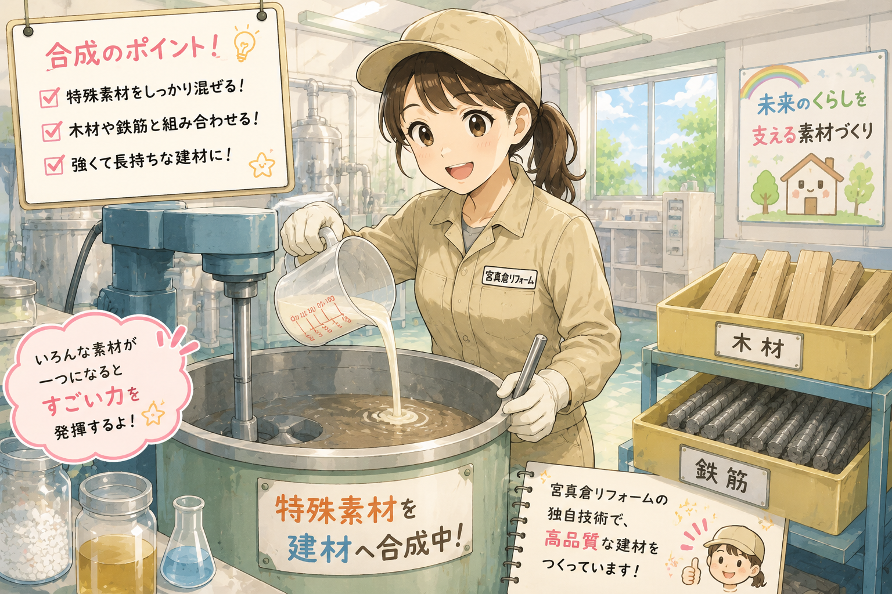

STEP 3
合成

分離した素材は、専用設備を使用して木材や鉄筋へと合成されます。
特殊素材を混ぜ合わせることで、 より丈夫で長持ちする建材へと生まれ変わります。
宮真倉リフォームでは、 長年培った独自技術によって高品質な特殊建材を製造しています。
毎日の暮らしを支えるため、 品質管理も徹底して行っています。
宮真倉リフォームのひみつ
特殊素材は、建材へと合成されることで、 強度と耐久性に優れた素材へと生まれ変わります。
調達
分離
合成
加工
STEP 3

分離した素材は、専用設備を使用して木材や鉄筋へと合成されます。
特殊素材を混ぜ合わせることで、 より丈夫で長持ちする建材へと生まれ変わります。
宮真倉リフォームでは、 長年培った独自技術によって高品質な特殊建材を製造しています。
毎日の暮らしを支えるため、 品質管理も徹底して行っています。
次は「加工」を紹介するよ！
次へ